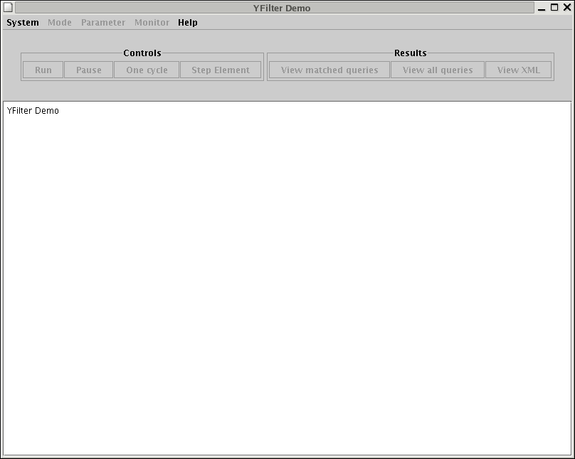
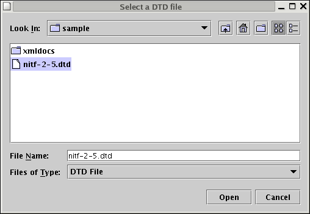
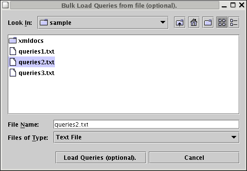
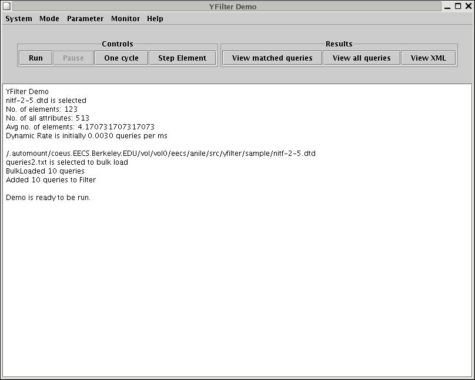
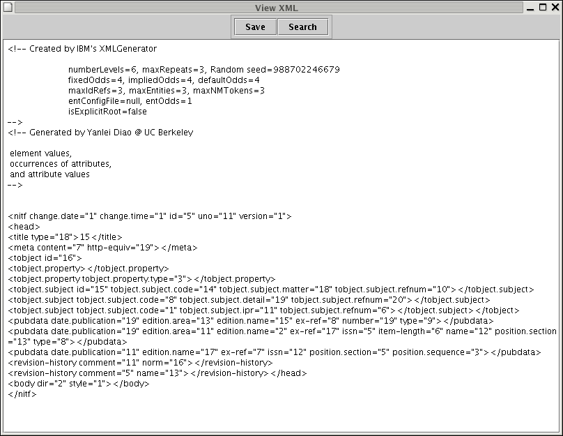
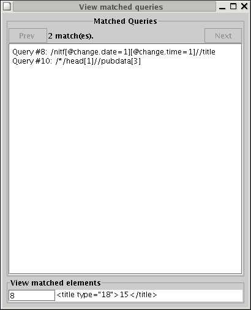
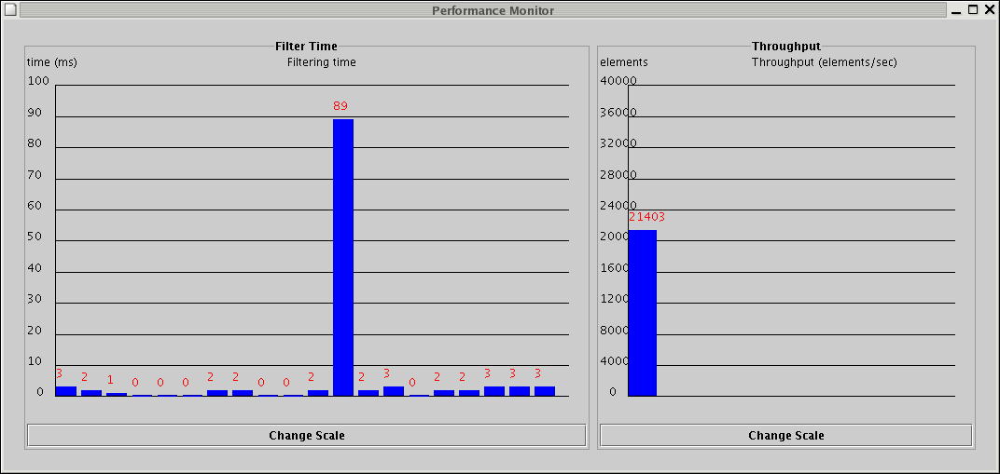
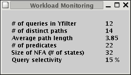
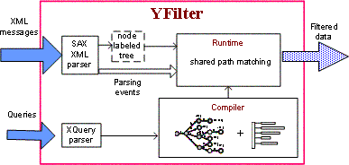

Introduction to YFilter 1.0 Release
In this release, we include the filtering engine of the YFilter system developed at the University of California at Berkeley. This filtering engine provides fast, on-the-fly matching of XML messages to simultaneous queries that represent different data interests. These queries consist of path expressions written in a subset of XPath 1.0. A detailed description of the language subset that this release supports is provided in Section 5 of this manual. For each XML message, the engine returns a result for every matched query. A result can be either a boolean value (i.e., True), or a sequence of elements that matched the query. This engine is implemented in the Java programming language, using J2SE1.4.x.
As systems built on YFilter are likely to be deployed in distributed wide-area environments, the number of users of such systems can easily grow into hundreds of thousands. YFilter was designed to handle such large numbers of queries. In particular, it provides high efficiency and scalability for filtering XML messages by exploiting commonality among all the queries.
YFilter was also designed to handle streaming XML data. Continuously arriving XML messages are processed on-the-fly in order of arrival. Lightweight event-based XML parsing is used to drive the execution of YFilter so that queries can be evaluated as a message is being parsed. YFilter does not use indexing or disk-oriented solutions for handling the XML data.
The current release only contains the filtering engine of the YFilter system. More advanced features such as further transforming the matching XML messages based on query-specific requirements are not included in this release.
Installation
Since YFilter is a Java-based system, having a Java Runtime Environment is a pre-requisite. The filtering engine of YFilter also uses a number of libraries that are included in this package. This engine has been developed and tested on Linux (RedHat Fedora) and Windows (Cygwin).
The directory structure of the package is as described below.
INSTALL is a quick and dirty installation guide.
bin/ contains the executable scripts in the package.
build/ contains the JAR file and the classes.
tests/ contain the correctness and performance test suites.
sample/ contains sample DTD and query files for the GUI.
include/ contains the required libraries.
src/ is the source tree containing the Java source files.
html/ contains this user manual and API documentation.
doc/ contains additional technical reference material.
-
Software requirements
- Install the Java Runtime Environment version 1.4.x.
-
Configuration
- Set the
YFILTER_HOMEenvironment variable to point to the YFilter installation directory. -
Add
$YFILTER_HOME/binto thePATHto access all the executables. -
Add
$YFILTER_HOME/include/dtdparser113.jarand$YFILTER_HOME/include/java_cup.jarto theCLASSPATH. - Add
$YFILTER_HOME/build/yfilter.jarto theCLASSPATH. - If you make changes to the source,
Makefiles are also provided for re-compiling the classes. Note that in this case, you need to modify yourCLASSPATHin order to use the newly compiled classes instead of the originalyfilter.jarfile.
At this point, you are ready to use YFilter.
Using YFilter: Modes of operation
-
Command-line execution mode
This is the default mode of operation, which can be used by most users. In this mode, YFilter can be used to run a set of queries against one or multiple documents and return the query results. The YFilter engine has a bunch of parameters that can be used for fine-tuning it (more on this later in this section). This mode selects default values for most of those parameters. To run YFilter in this mode, use the following command.
% yfilter (DOC_FILE | DOC_DIR) QUERY_FILE
The two parameters are a document file (or a directory, in which case
all the files ending in -
Interactive mode
The YFilter GUI (Graphical User Interface) can be launched by the
following command. -
Command-line benchmarking mode
This mode allows the expert user the most control over running the system. The
EXfilterclass provides a test driver for bulkloading a set of queries and benchmarking the performance of the filtering engine. In particular, it offers a number of parameters that can be tweaked for benchmarking purposes. These parameters and their values are described in their man page.This class outputs the performance measurements to the
performance.txtfile, containing the execution time (msec) for each document as well as the average execution time over the entire set of documents (excluding those used for warming up the JVM). By default, the query results are output to theresult.txtfile. The cost of writing results to this file is not included in the measured execution time. When theoutputoption ofEXfilteris set toindiv, the query results are written to different files, one per document, in order of document execution. When theprofileoption ofEXfilteris turned on, the profiling result is output to theprofile.txtfile.Examples of uses of the parameters and some description of their impact on the measured performance of the engine can be found in Section 7 of this manual.
-
Library mode
This release also provides an API for using the filter as a library. This mode can be used by users who want to explore the package, to learn more about its internals, or to use YFilter in conjunction with other systems.
The main filter class is
EXfilterBasic. Example implementations using this class can be found in themainfunction of theRunclass for command-line execution, and that of theEXfilterclass for command-line benchmarking.Other important classes include
PathGenerator, that is used to generate XPath queries based on statistics, andDTDStat, that collects such statistics from an input DTD file.
.xml are collected from the
directory) and a query file. YFilter reads and parses queries from the
query file, runs these queries against
the document(s) and prints out
the results. For example, the following command will process all the
queries in the input query file with the specified XML document. In the next example, all the queries in the input query file will be processed with each XML document in the specified XML directory.
% yfilter sample/xmldocs/outFile1.xml sample/queries3.txt
% yfilter sample/xmldocs/ sample/queries3.txt
This can be used by the casual user as a gentle introduction to YFilter. Section 4 walks the user through this mode.
% yfilter_demo
-
Continuous server mode
This mode of operation runs the filter in a client-sever fashion. This enables a client program to access the filter using the
FilterInstanceAPI to add queries, bind documents, get results and delete queries.FilterInstanceprovides a Java Thread wrapper over theEXfilterBasicclass. A sample client class calledSimpleAppis included in the release. Its member functions demonstrate the use of the API.
% java edu.berkeley.cs.db.yfilter.filterinstance.SimpleApp
A YFilter Walkthrough
which brings up the YFilter User Interface.
% yfilter_demo

Click onSystem->Select DTD to select a DTD
file used for generating queries. One example DTD, NITF (News Industry Text Format), is
available in the sample sub-directory.

Optionally, select the queries to be bulk-loaded. Sample queries are also included in thesample sub-directory. This step is
optional, as the system will dynamically generate queries based
on the specified DTD to simulate online query submissions.

Once YFilter processes the DTD file and bulkloads queries from the query file, the demo is ready to be run.
The system can be run in two ways. One way is to run documents through the filter, one at a time. This is achieved by clicking on
One
Cycle. This will run all the queries in the filter through one
document, processing it completely. Once the cycle is complete, the processed
document and the results of the processing can be viewed.
Clicking on View XML will bring up
the processed document in a new window.
Click on
View all queries to get a list of all the
queries in the filter, against which the above document was processed.
This opens up in a new window. 
Click on
View matched queries to view the matched queries, which will
also bring up a new window.
In the Matched Queries window, click on Next
to view a list of matched queries. The elements that matched a particular query
can be viewed by entering the identifier of the query in the View
matched elements text box at the bottom of the window.
The other way to run the system is to run it continuously and monitor its performance. The user is advised to close query and XML viewers before running the system in this mode to reduce the system load on refreshing the viewers. Then click the
Run button in the
control panel and open the monitoring panels using
the Monitor menu. Clicking on each menu item will bring
up a window that displays the relevant parameters. 

The Query Language
The syntax of the path expressions that YFilter supports is the following.
[1]
PathExpr
::= (( "/" | "//" ) StepExpr
)+ ( "/" AdditionalSelect
)? /*
every path query is absolute */
[2]
StepExpr
::= ( QName
| "*") ( "[" Predicate
"]"
)*
/* no Boolean "and"/"or" */
[3]
Predicate
::= SimplePredicate
| PathPredicate
[4] SimplePredicate
::= "@" QName
"=" ( Literal
| PositiveNumber
)
/* attribute of an element */
| PositiveNumber
/* position of an element */
| "position" "(" ")" Comparator PositiveNumber
/* position of an element */
| "text" "(" ")" "=" ( Literal
| PositiveNumber
) /* text data of an element */
[5]
PathPredicate
::= ( ".//" | "./" )? SimpleStepExpr
(( "/" | "//" ) SimpleStepExpr)*
/* nested paths are relative */
[6]
SimpleStepExpr
::= ( QName
| "*") ( "[" SimplePredicate
"]"
)*
/* only one level of path nesting */
[7] AdditionalSelect
::=
"@" QName
| "text" "("
")"
/* select an attribute or the text data of the addressed element */
[8]
Comparator
::= "=" | "!=" | ">" | "<" | ">=" | "<="
[9]
QName
::= NCNAME
/* no namespace */
[10]
NCNAME
::= ( Letter
| '_' ) ( NCNameChar
)*
[11]
NCNameChar
::= Letter
| Digit
| '.' | '-' |
'_'
/* no combiningChar or extender */
[12]
Literal
::= "" [^"]* ""
[13] PositiveNumber
::=
[1-9][0-9]*
[14]
Digit
::= [0-9]
[15]
Letter
::= [a-zA-Z]
This syntax allows YFilter to handle path expressions that
are commonly used for filtering XML documents. Examples of such
expressions include:
- Simple path expressions:
-
/nitf/head/title -
/nitf/head/pubdata/* -
/nitf//person - Path expressions with simple predicates:
-
/nitf/head/docdata[@doc-idref = "iptc.32a"]/series -
/nitf/head/tobject[@tobject.type = "news"]/* -
/nitf//person[text( ) = "John"] -
/nitf/head/revision-history[1] - Path expressions with nested path expressions:
-
/nitf[head/tobject[@tobject.type = "news"]]//person[text( ) = "John"] -
/nitf[.//person[text( ) = "John"]]/body//headline - Others:
-
/nitf//toject.property/@tobject.property.type -
/nitf//rights.startdate/text( )
Note that YFilter currently does not support the full XPath 1.0 language. Some path expressions that YFilter does not support, however, can be rewritten using the language subset described above. A notable example is that YFilter does not allow comparison between a nested path expression and a value, e.g., /nitf[.//person/text( ) = "John"]/body. But this path expression can be simply transformed to an equivalent path expression, /nitf[.//person[text( ) = "John"]]/body, that YFilter does support .
Architecture
The architecture of the YFilter filtering engine is shown in the following figure. The primary inputs to the engine are the queries that represent interest specifications and the XML messages. The output consists of a boolean value or a sequence of elements for each query that has been satisfied by the incoming message.

Architecture of the YFilter filtering engine
The major components of this architecture include:
- XQuery parser: It parses arriving queries and sends the
parsing results to the compiler. It is implemented by the
queryparserpackage. - XML parser: Based on an event-based XML parsing tool, it
produces parsing events, passes them to the runtime system to drive
query execution, and incrementally constructs an internal
representation of the XML message, i.e., a node labeled tree, for later
query processing. The XML parser is implemented by the
xmltreepackage. - Compiler: The compiler of YFilter constructs execution plans
for all the queries exploiting the commonality among these queries. It
is implemented by the
querymodulepackage. - Runtime: When processing a message, the runtime system of
YFilter executes the constructed query plans. By doing so, it matches
all the queries against the message in a shared fashion. As mentioned
above, it returns a result (i.e., a boolean value or a sequence of
elements) for each query that has been satisfied. The runtime system is
implemented by the
operatorspackage.
The main filter package is filter.
This package orchestrates the various components listed above to
provide the filtering service.
Using the Test Suites
In this release, we include tests suites for both correctness tests and performance tests of the filtering engine.
-
Correctness Tests
cd $YFILTER_HOME/tests/.- Extract a
correct.outdirectory from eithercorrect_unix.out.tgz(if you are a UNIX user) orcorrect_win.out.zip(if you are a Windows user). Placecorrect.outunder the current directory, i.e.,$YFILTER_HOME/tests/. - Run the
scripts/test.yfilter.shscript. - Run the
scripts/test.diff.shscript. - Visit the
diff.outsub-directory created under$YFILTER_HOME/tests. For each of the five sub-directories ofdiff.out, check if all the".diff"files have a size of 0. If all the files in the five sub-directories are empty, the filtering engine has passed the correctness tests. -
Performance Tests
- It reads such path expressions from
queries-153928-d.txtin the$YFILTER_HOME/tests/benchmark_simple_paths/subdirectory (please unzip the query file first). - It varies the number of processed queries from 1,000 to
150,000 by using the
num_queriesparameter ofEXfilter. - It writes the
performance measurements back to
$YFILTER_HOME/tests/benchmark_simple_paths/.
Correctness tests are provided to program developers who modify the YFilter source code for their targeted applications. To ensure that the filtering engine performs correctly, those developers are strongly encouraged to re-run the correctness tests following the steps listed below.
Test suites for benchmarking are also included in $YFILTER_HOME/tests/.
The scripts for running the benchmarking tests are available in the scripts
subdirectory. The names of these scripts start with "vary".
These scripts show examples of using different parameters of
EXfilter
(see the man page for a description of them),
and the measured results demonstrate the impact of these parameters on the
performance of the engine.
The test provided by varyNumDistinctQueries.sh
focuses on distinct path expressions that do not contain any
predicates.
The test provided by varyNumRandomQueries.sh
focuses on random path expressions without any predicates. This test is run similarly as
the previous one, except that it reads queries from queries-500000.txt in the
$YFILTER_HOME/tests/benchmark_simple_paths/ subdirectory (please also unzip the query file first), and
varies the number of the processed queries from 1,000 to 500,000.
The test in varyNumRandomQueries_PathNavi.sh
considers the same set of queries as varyNumRandomQueries.sh.
But it sets the engine in such a mode that the engine only performs operations for matching
path expressions, but not for collecting the results on which queries
are matched. It does so by first setting the result
parameter of EXfilter to NONE, and then
setting the nfa_opt parameter to 0 (note that the order
of setting these parameters matters here). The results of this test,
written to the same sub-directory as above, contain only the cost of
the core operations for matching path expressions, which can be used to
truly compare different path matching engines.
Creating Your Own Test Suites
The user can create his own test suites using the sub-packages included in this release. Creating a new test takes the following three steps.
- Parse a DTD
- Generate queries
- Call the test driver
The DTDStat
class scans an input DTD and generates useful statistics for query
generation. The man page of this
class describes its parameters. The following command shows an example
for parsing nitf-2-5.dtd.
% java edu.berkeley.cs.db.yfilterplus.dtdscanner.DTDStat nitf-2-5.dtd nitf-2-5.stat
The
PathGenerator class reads the statistics
generated by DTDStat, and generates a set of XPath
queries according to workload parameters. Refer to the man page for a description of
these parameters. For example, the following command generates 10
queries, each of which contains two value-based predicates and one
nested path expression.
% java edu.berkeley.cs.db.yfilterplus.querygenerator.PathGenerator
nitf-2-5.stat queries1.txt 10 6 0.2 0.2 --num_predicates=2 --num_nestedpaths=1
In the next sample, the command generates 10 distinct queries, each of which contains value-based predicates and nested paths according to a probabilistic model. This model is good for generating mixed query workloads.
% java edu.berkeley.cs.db.yfilterplus.querygenerator.PathGenerator
nitf-2-5.stat queries2.txt 10 6 0.2 0.2 --prob_predicate=0.03 --prob_nestedpath=0.2 --distinct=TRUE
Call the EXfilter
class to run the test (again, see the man
page for a description of the parameters). Alternatively, compose a
script to run the test, following the examples shown in the previous
section.
Known Bugs and Limitations
[1] or [position( )
< 5]) that occurs after some other predicates in the same
location step. An example is /nitf//person[text() =
"John"][1]. YFilter currently does not handle such positional
predicates properly. It is important to note, however, that YFilter
does handle positional predicates that appear as the first or the only
predicate in a location step, e.g., /nitf//person[1], and
/nitf//person[1][text( ) = "John"].
YFilter also has the following known limitations:
- It does not support namespaces.
- It currently supports only one level of nesting of path expressions, i.e., a nested path expression does not contain nested path expressions itself.
- It does not terminate the processing of a document before the parse is complete.
- It materializes each XML document on-the-fly until the
processing of this document is finished. There is no data pruning.
We expect to fix these problems in our future releases. The users concerned with these issues can fix them by improving the code, or contact us for the details of the solutions.